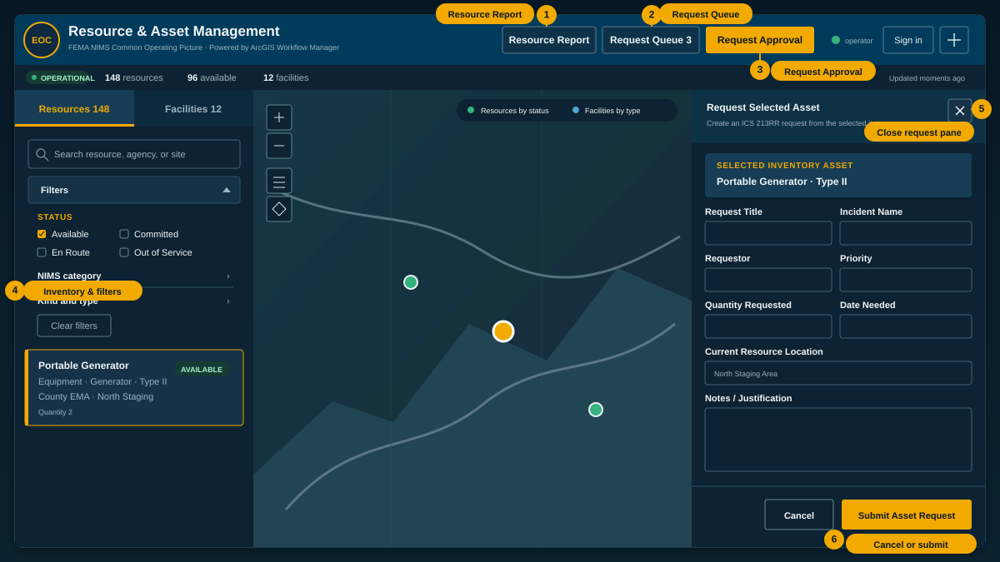
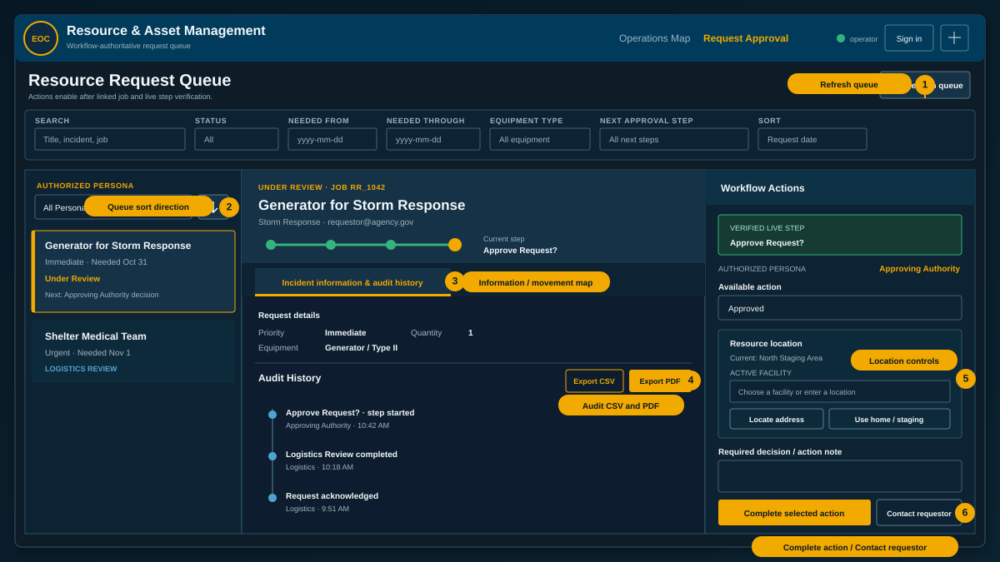
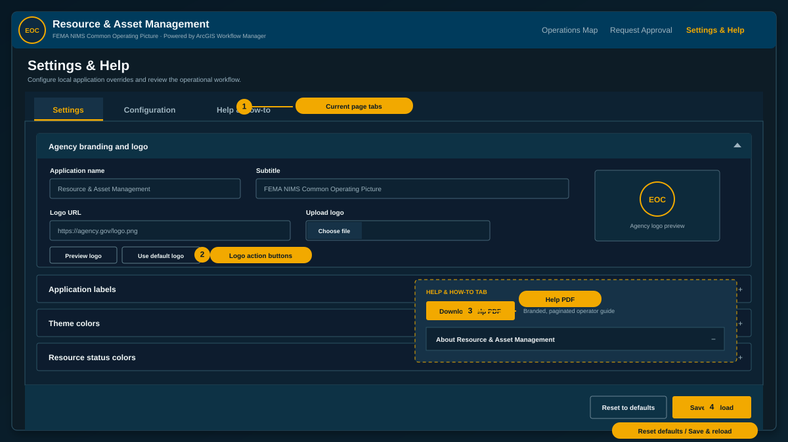

Agency branding and logo
HTTPS URL or PNG, JPEG, GIF, or WebP. Maximum upload size: 300 KB.
Application labels
Theme colors
Resource status colors
Operator defaults
Data connections and layers
Workflow Manager
Workflow identifiers are deployment-controlled and read-only to prevent accidental request/job corruption.
Deployment diagnostics
- Status
- Loading deployment configuration…
About Resource & Asset Management
This authenticated application combines a NIMS-typed resource inventory, facility inventory, operational map, ICS 213RR-style requests, and an ArcGIS Workflow Manager approval lifecycle.
Systems of record: The secured ArcGIS feature service stores resources, facilities, and request records. The Web Map controls operational symbology, labels, visibility ranges, pop-ups, and legend content. Workflow Manager is authoritative for each request's current step, assignment, and audit trail.
Use the Operations workspace

Resources and Facilities
- Use the Resources and Facilities tabs at the top of the left pane to switch inventories. Resources open first.
- Search Resources by resource, agency, or site. Expand Filters to limit by status, NIMS category, kind, or type.
- Search Facilities by facility name, type, or location.
- Select a Resource or Facility to highlight it and center the map at the selection zoom scale configured in Settings.
- A Resource selection opens the request form in the right pane. A Facility selection is map-focused and does not create a resource request.
Map and status controls
- Use Home, Layers, Basemap, Bookmarks, and Legend controls on the map.
- The command strip reports total resources, available resources, facilities, system status, and last refresh time.
- Select Requests to inspect open request records and their Workflow Manager linkage state.
- Select Request Approval to open the workflow queue. The cog immediately to the right of Sign out opens Settings and Help.
Submit an inventory request
- Sign in from the Operations workspace.
- On the Resources tab, select the resource to request. The map highlights and zooms to it, and the right-side request pane opens.
- Review the selected asset summary and prefilled category, kind, type, quantity, requestor, and current location.
- Enter the request title, incident, priority, quantity, date needed, and operational notes or justification.
- Select Submit Asset Request. The app creates the request record, creates or reuses exactly one Workflow Manager job, verifies the request GlobalID correlation, writes the WFMJobId back to the request, and verifies the link.
- Wait for the final linked-success message. A request is workflow-ready only when IntegrationState = Linked and WFMJobId contains a job ID.
Important: If any workflow operation fails, the request retains its Integration State and Integration Error for troubleshooting. Do not process an unlinked request as if it were approved.
Use the Request Approval workspace

- Search the queue and filter by request status, needed-date range, equipment type, next workflow step, or authorized persona. Sort by needed date, priority, or title.
- Select a request to view its status timeline, request details, live Workflow Manager assignment, required persona, and audit history.
- Workflow actions remain disabled until the application verifies the WFMJobId, IntegrationState, request GlobalID correlation, and current live step.
- Select an available action, enter the required decision or action note, and then select Complete selected action.
- Use Contact requestor to prepare an email with request details and the signed-in user's signature.
- Use the cog immediately to the right of Sign out to open Settings and Help.
Follow the Workflow Manager lifecycle
Approved branch
- Request Submitted — Logistics: acknowledge and route the request.
- Logistics Review — Logistics: validate NIMS typing, quantity, priority, incident, and availability.
- Approve Request? — Approving Authority: approve or deny with a required note.
- Source / Commit Resource — Logistics: select and commit the resource.
- Notify Ready to Deploy — Logistics: send the ready-to-deploy notification.
- Mobilize / Dispatch — Logistics: dispatch the committed resource.
- Deploy / In Use — Operations: confirm deployment and operational use.
- Ready to Return? — Operations: choose Ready or Remain Deployed. Remain Deployed returns the job to Deploy / In Use.
- Demobilize — Operations: coordinate demobilization and return.
- Return & Restock — Logistics: inspect, return, and restock the resource.
- Notify Resource Returned — Logistics: send the returned-resource notification.
- Request Closed — Workflow Administrator: acknowledge final closeout.
Denied branch
- Record Denial — Approving Authority: record the denial reason.
- Notify Request Denied — Approving Authority: send the denial notification.
- Resubmit Request? — Requestor: choose Resubmit to return to Logistics Review, or Close to proceed to Request Closed.
Audit history and PDF reports
- Export CSV downloads the selected request metadata and Workflow Manager audit events as a spreadsheet-ready file.
- Export PDF in Audit History directly downloads a paginated audit report—no popup or print dialog.
- Export request PDF directly downloads a paginated request report—no popup or print dialog.
- Both PDFs use the configured application name, subtitle, color palette, agency logo, branded headers and footers, page numbers, and generation details. If no agency logo is configured, the EOC mark is used.
- Audit entries combine Workflow Manager history and comments and identify the responsible persona when available.
Configure Settings and Help

- Open this page with the cog immediately to the right of Sign out on Operations or Request Approval.
- Settings: configure agency name, subtitle, HTTPS logo URL or uploaded logo, interface labels, theme colors, status colors, and operator defaults.
- Configuration: review or override the portal, OAuth client, Web Map, feature service, layer indexes, selection zoom scale, and layer visibility. Workflow identifiers are read-only.
- Settings are browser-local overrides. Select Save & reload to apply them in this browser. Select Reset to defaults to remove local overrides and restore deployment values.
- The configured branding and logo are also applied to generated Request and Audit History PDFs.
Troubleshooting
Sign-in does not complete
Verify the portal URL, OAuth client ID, registered redirect URI, account access, and item sharing.
Resources, facilities, or the map do not load
Confirm the Web Map and feature service are shared with the signed-in user, the configured layer indexes are correct, and Resources and Facilities are enabled under Configuration.
A workflow action is unavailable
Read the diagnostic in Workflow Actions. The request must contain a WFMJobId, have IntegrationState set to Linked, match the job's resource_request.globalid property, and expose a supported current step.
The request says “Workflow job is not linked”
Review its Integration State and Integration Error. Failed or reconciliation-required records need administrator attention or replacement; a blank WFMJobId must not be guessed or manually fabricated.
An email shows blank request values
Confirm the job contains resource_request.request_title and resource_request.incident_name extended-property values and that the Send Email subject and body are configured as Arcade expressions.
A PDF does not download
Confirm browser downloads are allowed. Request and Audit PDFs download directly and do not require popups. If an external agency logo cannot be loaded, the report uses the EOC fallback mark.